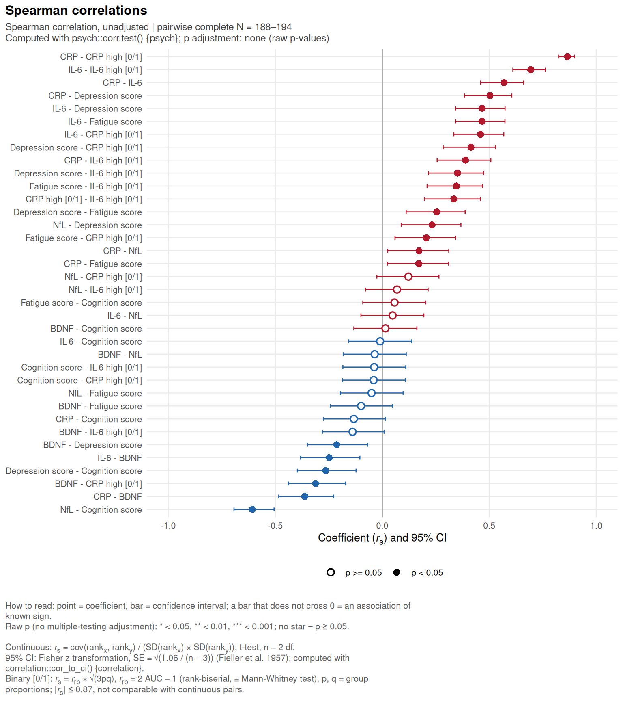
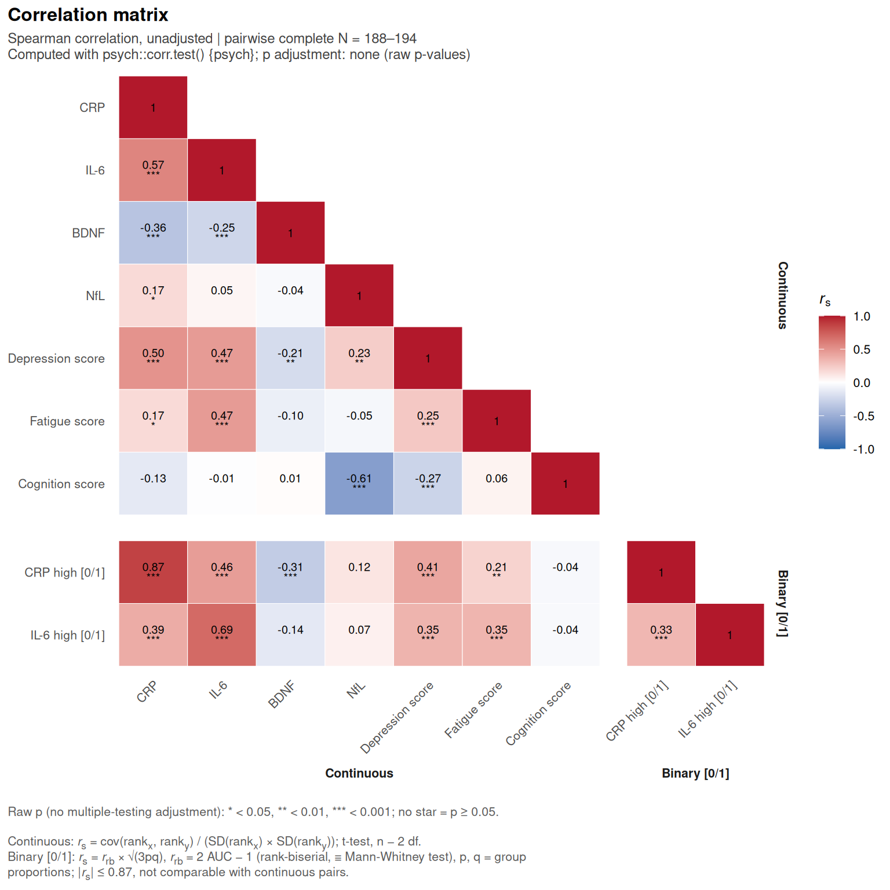
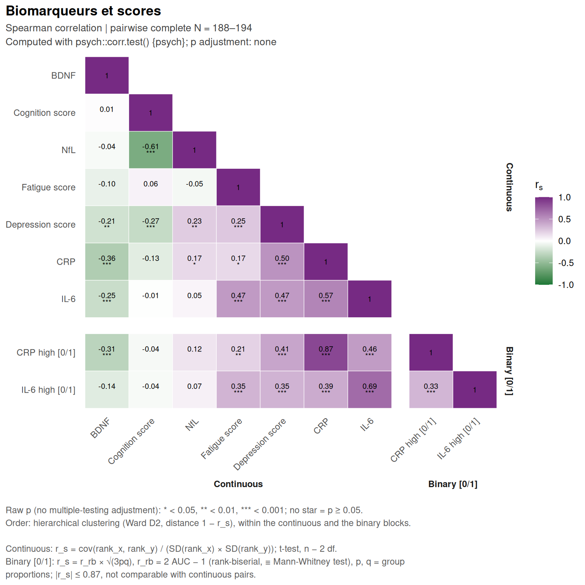
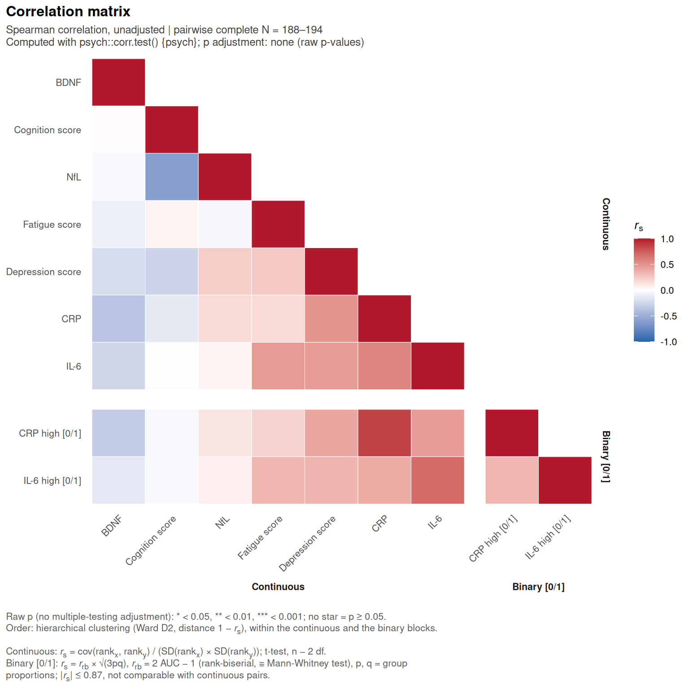
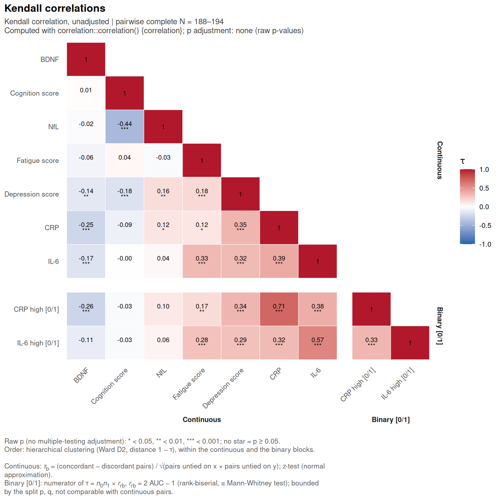

library(corrkit)
options(corrkit.unicode = TRUE) # PNG figures: keep the mathematical symbols
d <- simulate_cor_data(n = 200)
lab <- attr(d, "labels")
str(d)
#> 'data.frame': 200 obs. of 11 variables:
#> $ age : num 61 42 57 54 47 25 46 43 56 49 ...
#> $ sex : Factor w/ 2 levels "F","M": 1 1 1 2 2 2 1 1 2 2 ...
#> $ CRP : num 1.95 0.98 0.51 3.89 0.55 0.43 0.6 1.66 1.46 2.39 ...
#> $ IL6 : num 0.82 -0.65 -0.28 0.71 -0.07 -0.45 -0.29 1.5 -1.36 0.14 ...
#> $ BDNF : num 0.3 -0.35 -0.21 0.89 1.55 1.31 0.32 0.17 -1.48 -1.3 ...
#> $ NfL : num 0.93 -0.15 -0.76 -0.86 -1.08 -1.47 -1.5 NA -0.99 -0.06 ...
#> $ depression: num 7.3 7.3 NA 14.4 9.1 10.2 6 14.1 15.2 11.4 ...
#> $ fatigue : num 4 5.6 4.6 9.2 9.1 7.6 7.5 12.3 4.5 0.1 ...
#> $ cognition : num 23.6 25.7 25.5 24.3 26 NA 27.6 26.3 26.1 27.7 ...
#> $ BIN_CRP : Factor w/ 2 levels "low","high": 2 1 1 2 1 1 1 2 2 2 ...
#> $ BIN_IL6 : Factor w/ 2 levels "low","high": 1 1 1 1 1 1 1 2 1 1 ...
#> - attr(*, "labels")= Named chr [1:11] "Age" "Sex" "CRP" "IL-6" ...
#> ..- attr(*, "names")= chr [1:11] "age" "sex" "CRP" "IL6" ...Analyse complète d’une matrice de corrélation
Cette vignette reprend le début de Prise en main et le détaille : d’où viennent les calculs, toutes les sorties d’une matrice de corrélation, leurs options et leur lecture.
L’idée : ne rien recalculer, tout expliquer
corrkit ne contient aucun nouvel estimateur. Chaque coefficient, chaque p-value et chaque intervalle vient d’une fonction existante et validée ; le package ajoute par-dessus une manière de travailler et des sorties qui disent ce qu’elles montrent.
| Ce qui est calculé | Fonction utilisée | Repli si le package manque |
|---|---|---|
| Une paire, sans ajustement | stats::cor.test() |
— |
| Une paire, partielle |
ppcor::pcor.test() (Kim 2015) |
corrélation des résidus de stats::lm.fit()
|
| Toutes les paires (matrice) |
psych::corr.test(adjust = "none") ou correlation::correlation(p_adjust = "none") (Makowski et al. 2020) |
stats::cor.test() paire par paire |
| Intervalle de confiance | correlation::cor_to_ci() |
transformation z de Fisher en R de base |
| Ajustement pour tests multiples (sur demande) | stats::p.adjust() |
— |
| Effets des variables binaires |
stats::t.test(), stats::wilcox.test(), effectsize::rank_biserial()
|
IC de r_rb non calculé |
Une seule fonction calcule, cor_compute() ; son résultat se dessine avec plot() (un ggplot), se met en tableau avec tbl_cor() (un tableau gt) et se décrit avec summary().
Données et calcul
simulate_cor_data() génère des données dont on connaît la structure : une inflammation latente qui pilote CRP, IL-6, BDNF et le score de dépression ; IL-6 qui pilote la fatigue ; l’âge qui pilote à la fois NfL et la cognition ; et deux versions binaires des marqueurs (CRP coupée à la médiane, IL-6 coupée au 80e percentile).
lab est un vecteur nommé variable → libellé ; toutes les fonctions l’acceptent via labels.
vars <- c("CRP", "IL6", "BDNF", "NfL", "depression", "fatigue", "cognition", "BIN_CRP", "BIN_IL6")
cm <- cor_compute(d, vars, method = "spearman", labels = lab)
cm
#> <cor_result> Spearman correlations: 9 variables, 36 pairs (2 binary variables)
#> engine: psych::corr.test() {psych} | N = 188–194
#> Raw p (no multiple-testing adjustment): * < 0.05, ** < 0.01, *** < 0.001; no star = p ≥ 0.05.
#>
#> CRP IL6 BDNF NfL depression fatigue cognition
#> CRP 1
#> IL6 0.57*** 1
#> BDNF -0.36*** -0.25*** 1
#> NfL 0.17* 0.05 -0.04 1
#> depression 0.50*** 0.47*** -0.21** 0.23** 1
#> fatigue 0.17* 0.47*** -0.10 -0.05 0.25*** 1
#> cognition -0.13 -0.01 0.01 -0.61*** -0.27*** 0.06 1
#> BIN_CRP 0.87*** 0.46*** -0.31*** 0.12 0.41*** 0.21** -0.04
#> BIN_IL6 0.39*** 0.69*** -0.14 0.07 0.35*** 0.35*** -0.04
#> BIN_CRP BIN_IL6
#> CRP
#> IL6
#> BDNF
#> NfL
#> depression
#> fatigue
#> cognition
#> BIN_CRP 1
#> BIN_IL6 0.33*** 1Les arguments principaux de cor_compute() :
| Argument | Défaut | Rôle |
|---|---|---|
x, y
|
— |
y = NULL : toutes les paires de x (matrice) ; y donné : x × y (voir Corrélations croisées et partielles) |
covariates |
NULL |
covariables d’une corrélation partielle |
method |
"spearman" |
"pearson", "kendall", ou une méthode robuste du package correlation (voir Comparer les coefficients) |
p_adjust |
"none" |
p-values brutes ; "BH", "holm", "bonferroni"… pour un ajustement sur les k(k − 1)/2 paires (voir Corrections pour tests multiples) |
engine |
"auto" |
sans covariables : psych::corr.test(), puis correlation::correlation(), puis stats::cor.test() ; avec covariables : ppcor::pcor.test()
|
labels |
NULL |
libellés des variables, repris par toutes les sorties |
ci |
0.95 |
niveau des intervalles de confiance (NULL = aucun) |
Les sorties
Toutes les sorties partent du même objet cm.
plot(cm) appelle plot_cor_heatmap(cm).
plot(cm)
Chaque coefficient avec son intervalle de confiance : la heatmap montre la structure, le forest plot la précision. Point plein = p < 0,05.
plot(cm, type = "forest")
Une paire, avec ce que mesure le coefficient ; par défaut la paire la plus corrélée.
Le même résultat que la heatmap, avec la même échelle de couleurs.
tbl_cor(cm)| Correlation matrix | |||||||||
| Spearman correlation, unadjusted | pairwise complete N = 188–194 | Computed with psych::corr.test() {psych}; p adjustment: none (raw p-values) | |||||||||
| CRP | IL-6 | BDNF | NfL | Depression score | Fatigue score | Cognition score | CRP high [0/1] | IL-6 high [0/1] | |
|---|---|---|---|---|---|---|---|---|---|
| CRP | 1 | ||||||||
| IL-6 | 0.57*** | 1 | |||||||
| BDNF | -0.36*** | -0.25*** | 1 | ||||||
| NfL | 0.17* | 0.05 | -0.04 | 1 | |||||
| Depression score | 0.50*** | 0.47*** | -0.21** | 0.23** | 1 | ||||
| Fatigue score | 0.17* | 0.47*** | -0.10 | -0.05 | 0.25*** | 1 | |||
| Cognition score | -0.13 | -0.01 | 0.01 | -0.61*** | -0.27*** | 0.06 | 1 | ||
| CRP high [0/1]1 | 0.87*** | 0.46*** | -0.31*** | 0.12 | 0.41*** | 0.21** | -0.04 | 1 | |
| IL-6 high [0/1]1 | 0.39*** | 0.69*** | -0.14 | 0.07 | 0.35*** | 0.35*** | -0.04 | 0.33*** | 1 |
| 1 Binary variable [0/1], coded 0/1 (upper level = 1). | |||||||||
| Raw p (no multiple-testing adjustment): * < 0.05, ** < 0.01, *** < 0.001; no star = p ≥ 0.05. | |||||||||
| Continuous: r_s = cov(rank_x, rank_y) / (SD(rank_x) × SD(rank_y)); t-test, n − 2 df. | |||||||||
| Binary [0/1]: r_s = r_rb × √(3pq), r_rb = 2 AUC − 1 (rank-biserial, ≡ Mann-Whitney test), p, q = group proportions; |r_s| ≤ 0.87, not comparable with continuous pairs. | |||||||||
| Confidence intervals: tbl_cor(layout = "long"). | |||||||||
| Notation: Makowski D, Ben-Shachar MS, Patil I, Lüdecke D (2020), J Open Source Softw 5(51):2306, doi:10.21105/joss.02306. | |||||||||
Une ligne par paire, avec n, l’intervalle de confiance et la p-value ; lignes significatives en gras.
tbl_cor(cm, layout = "long", sort_by = "abs")| Spearman correlations | ||||||
| Spearman correlation, unadjusted | pairwise complete N = 188–194 | Computed with psych::corr.test() {psych}; p adjustment: none (raw p-values) | ||||||
| Variable 1 | Variable 2 | Pair | n | rₛ | 95% CI | p (raw) |
|---|---|---|---|---|---|---|
| CRP | CRP high [0/1] | cont × bin | 194 | 0.87 | [0.82, 0.90] | < 0.001 *** |
| IL-6 | IL-6 high [0/1] | cont × bin | 194 | 0.69 | [0.61, 0.76] | < 0.001 *** |
| NfL | Cognition score | cont × cont | 188 | -0.61 | [-0.69, -0.51] | < 0.001 *** |
| CRP | IL-6 | cont × cont | 188 | 0.57 | [0.46, 0.66] | < 0.001 *** |
| CRP | Depression score | cont × cont | 188 | 0.50 | [0.38, 0.61] | < 0.001 *** |
| IL-6 | Depression score | cont × cont | 188 | 0.47 | [0.34, 0.57] | < 0.001 *** |
| IL-6 | Fatigue score | cont × cont | 189 | 0.47 | [0.34, 0.57] | < 0.001 *** |
| IL-6 | CRP high [0/1] | cont × bin | 188 | 0.46 | [0.33, 0.57] | < 0.001 *** |
| Depression score | CRP high [0/1] | cont × bin | 188 | 0.41 | [0.28, 0.53] | < 0.001 *** |
| CRP | IL-6 high [0/1] | cont × bin | 188 | 0.39 | [0.26, 0.51] | < 0.001 *** |
| CRP | BDNF | cont × cont | 188 | -0.36 | [-0.48, -0.23] | < 0.001 *** |
| Depression score | IL-6 high [0/1] | cont × bin | 188 | 0.35 | [0.22, 0.47] | < 0.001 *** |
| Fatigue score | IL-6 high [0/1] | cont × bin | 189 | 0.35 | [0.21, 0.47] | < 0.001 *** |
| CRP high [0/1] | IL-6 high [0/1] | bin × bin | 188 | 0.33 | [0.20, 0.46] | < 0.001 *** |
| BDNF | CRP high [0/1] | cont × bin | 188 | -0.31 | [-0.44, -0.17] | < 0.001 *** |
| Depression score | Cognition score | cont × cont | 188 | -0.27 | [-0.40, -0.12] | < 0.001 *** |
| Depression score | Fatigue score | cont × cont | 188 | 0.25 | [0.11, 0.39] | < 0.001 *** |
| IL-6 | BDNF | cont × cont | 188 | -0.25 | [-0.38, -0.10] | < 0.001 *** |
| NfL | Depression score | cont × cont | 188 | 0.23 | [0.09, 0.37] | 0.001 ** |
| BDNF | Depression score | cont × cont | 188 | -0.21 | [-0.35, -0.07] | 0.003 ** |
| Fatigue score | CRP high [0/1] | cont × bin | 188 | 0.21 | [0.06, 0.34] | 0.005 ** |
| CRP | NfL | cont × cont | 188 | 0.17 | [0.03, 0.31] | 0.018 * |
| CRP | Fatigue score | cont × cont | 188 | 0.17 | [0.02, 0.31] | 0.019 * |
| BDNF | IL-6 high [0/1] | cont × bin | 188 | -0.14 | [-0.28, 0.01] | 0.058 |
| CRP | Cognition score | cont × cont | 188 | -0.13 | [-0.27, 0.01] | 0.069 |
| NfL | CRP high [0/1] | cont × bin | 188 | 0.12 | [-0.03, 0.26] | 0.094 |
| BDNF | Fatigue score | cont × cont | 189 | -0.10 | [-0.24, 0.05] | 0.175 |
| NfL | IL-6 high [0/1] | cont × bin | 188 | 0.07 | [-0.08, 0.21] | 0.347 |
| Fatigue score | Cognition score | cont × cont | 188 | 0.06 | [-0.09, 0.20] | 0.435 |
| NfL | Fatigue score | cont × cont | 189 | -0.05 | [-0.20, 0.10] | 0.493 |
| IL-6 | NfL | cont × cont | 188 | 0.05 | [-0.10, 0.19] | 0.510 |
| Cognition score | CRP high [0/1] | cont × bin | 188 | -0.04 | [-0.19, 0.11] | 0.584 |
| Cognition score | IL-6 high [0/1] | cont × bin | 188 | -0.04 | [-0.18, 0.11] | 0.606 |
| BDNF | NfL | cont × cont | 189 | -0.04 | [-0.18, 0.11] | 0.627 |
| BDNF | Cognition score | cont × cont | 188 | 0.01 | [-0.13, 0.16] | 0.839 |
| IL-6 | Cognition score | cont × cont | 188 | -0.01 | [-0.16, 0.14] | 0.891 |
| Pair: cont = continuous, bin = binary[0/1]. Bold = p < 0.05. | ||||||
| Raw p (no multiple-testing adjustment): * < 0.05, ** < 0.01, *** < 0.001; no star = p ≥ 0.05. | ||||||
| Continuous: r_s = cov(rank_x, rank_y) / (SD(rank_x) × SD(rank_y)); t-test, n − 2 df. | ||||||
| 95% CI: Fisher z transformation, SE = √(1.06 / (n − 3)) (Fieller et al. 1957); computed with correlation::cor_to_ci() {correlation}. | ||||||
| Binary [0/1]: r_s = r_rb × √(3pq), r_rb = 2 AUC − 1 (rank-biserial, ≡ Mann-Whitney test), p, q = group proportions; |r_s| ≤ 0.87, not comparable with continuous pairs. | ||||||
| Notation: Makowski D, Ben-Shachar MS, Patil I, Lüdecke D (2020), J Open Source Softw 5(51):2306, doi:10.21105/joss.02306. | ||||||
print(cm)
#> <cor_result> Spearman correlations: 9 variables, 36 pairs (2 binary variables)
#> engine: psych::corr.test() {psych} | N = 188–194
#> Raw p (no multiple-testing adjustment): * < 0.05, ** < 0.01, *** < 0.001; no star = p ≥ 0.05.
#>
#> CRP IL6 BDNF NfL depression fatigue cognition
#> CRP 1
#> IL6 0.57*** 1
#> BDNF -0.36*** -0.25*** 1
#> NfL 0.17* 0.05 -0.04 1
#> depression 0.50*** 0.47*** -0.21** 0.23** 1
#> fatigue 0.17* 0.47*** -0.10 -0.05 0.25*** 1
#> cognition -0.13 -0.01 0.01 -0.61*** -0.27*** 0.06 1
#> BIN_CRP 0.87*** 0.46*** -0.31*** 0.12 0.41*** 0.21** -0.04
#> BIN_IL6 0.39*** 0.69*** -0.14 0.07 0.35*** 0.35*** -0.04
#> BIN_CRP BIN_IL6
#> CRP
#> IL6
#> BDNF
#> NfL
#> depression
#> fatigue
#> cognition
#> BIN_CRP 1
#> BIN_IL6 0.33*** 1
summary(cm)
#> == Correlation analysis (cor_result) ==
#>
#> Mode matrix: every pair of 9 variables
#> Method Spearman
#> Covariates none (unadjusted)
#> Engine psych::corr.test() {psych}
#> CI 95% (correlation::cor_to_ci)
#> p-values raw (no multiple-testing adjustment)
#>
#> -- Variables --
#> variable label role type n
#> CRP CRP matrix continuous 194
#> IL6 IL-6 matrix continuous 194
#> BDNF BDNF matrix continuous 194
#> NfL NfL matrix continuous 194
#> depression Depression score matrix continuous 194
#> fatigue Fatigue score matrix continuous 194
#> cognition Cognition score matrix continuous 194
#> BIN_CRP CRP high matrix binary 194
#> BIN_IL6 IL-6 high matrix binary 194
#>
#> -- Pairs --
#> 36 pairs (15 involving a binary variable), N = 188–194
#> p < 0.05: 23 (raw)
#>
#> -- Strongest pairs (|r_s|) --
#> pair r_s CI p n
#> CRP - CRP high 0.87 [0.82, 0.90] < 0.001 194
#> IL-6 - IL-6 high 0.69 [0.61, 0.76] < 0.001 194
#> NfL - Cognition score -0.61 [-0.69, -0.51] < 0.001 188
#> CRP - IL-6 0.57 [0.46, 0.66] < 0.001 188
#> CRP - Depression score 0.50 [0.38, 0.61] < 0.001 188
#>
#> -- Content of the object --
#> $table one row per pair (36 x 13): X, Y, x_type, y_type, r, ci_low, ci_high, p, p_adj, n, k, engine, ci_engine
#> $meta settings of the analysis (mode, meth, p_adjust, adjust_by, family, covariates, partial, k, x_vars, y_vars, x_types, y_types, labels, bin_mark, ci, engine, ci_engine)
#> $data the 9 columns used (200 rows)
#> Use: plot(x, type = "heatmap" | "forest" | "scatter"), tbl_cor(x, layout = ...),
#> as.matrix(x, what = "r" | "p" | "p_adj" | "n" | "ci_low" | "ci_high"), as.data.frame(x)Le tableau long, pour filtrer, trier ou exporter (write.csv(as.data.frame(cm), ...)).
head(as.data.frame(cm), 10)
#> X Y x_type y_type r ci_low ci_high
#> 1 CRP IL6 continuous continuous 0.56897575 0.46026507 0.66087549
#> 2 CRP BDNF continuous continuous -0.36210257 -0.48359271 -0.22692414
#> 3 CRP NfL continuous continuous 0.17166756 0.02501970 0.31108281
#> 4 CRP depression continuous continuous 0.50289312 0.38405847 0.60533837
#> 5 CRP fatigue continuous continuous 0.17073934 0.02406403 0.31021884
#> 6 CRP cognition continuous continuous -0.13285695 -0.27476108 0.01471135
#> 7 CRP BIN_CRP continuous binary 0.86603217 0.82458428 0.89823283
#> 8 CRP BIN_IL6 continuous binary 0.38914919 0.25657405 0.50735127
#> 9 IL6 BDNF continuous continuous -0.24812481 -0.38146502 -0.10466940
#> 10 IL6 NfL continuous continuous 0.04837098 -0.09961916 0.19426744
#> p p_adj n k engine ci_engine
#> 1 1.613518e-17 1.613518e-17 188 0 psych::corr.test correlation::cor_to_ci
#> 2 3.288137e-07 3.288137e-07 188 0 psych::corr.test correlation::cor_to_ci
#> 3 1.849267e-02 1.849267e-02 188 0 psych::corr.test correlation::cor_to_ci
#> 4 1.917294e-13 1.917294e-13 188 0 psych::corr.test correlation::cor_to_ci
#> 5 1.914605e-02 1.914605e-02 188 0 psych::corr.test correlation::cor_to_ci
#> 6 6.913152e-02 6.913152e-02 188 0 psych::corr.test correlation::cor_to_ci
#> 7 1.051319e-59 1.051319e-59 194 0 psych::corr.test correlation::cor_to_ci
#> 8 3.404032e-08 3.404032e-08 188 0 psych::corr.test correlation::cor_to_ci
#> 9 5.963373e-04 5.963373e-04 188 0 psych::corr.test correlation::cor_to_ci
#> 10 5.097724e-01 5.097724e-01 188 0 psych::corr.test correlation::cor_to_ciLire une heatmap
- le sous-titre donne la méthode, l’effectif (complet par paire : il varie avec les valeurs manquantes) et la fonction qui a fait le calcul ;
- chaque case affiche le coefficient et les étoiles de la p-value ; la couleur suit une échelle unique de −1 (bleu) à +1 (rouge) ;
- les variables binaires sont regroupées dans un bloc à part, car leur coefficient n’est pas sur la même échelle (voir Variables binaires) ;
- la légende du bas rappelle le statut des p-values (brutes, ou ajustées et sur quelle famille), l’ordre des variables, la formule du coefficient et la lecture des cases binaires.
Le sous-titre et les notes des tableaux sont construits par les mêmes fonctions internes que la légende de la heatmap : un graphique et son tableau ne peuvent pas se contredire.
Options de la heatmap
Par défaut, les variables sont ordonnées par classification hiérarchique (Ward, distance 1 − r) à l’intérieur de chaque bloc, ce qui rapproche les variables qui se ressemblent. order = "original" garde l’ordre donné.
plot(cm, order = "original")
separator = "line" remplace les facettes par deux traits et garde des cases carrées.
plot(cm, separator = "line")
show_values = FALSE ne garde que les couleurs, pour une vue d’ensemble d’une grande matrice.
plot(cm, show_values = FALSE)
palette (couleurs des corrélations négatives et positives), title, base_size, value_size et caption_width règlent l’apparence. Le résultat est un ggplot : on peut lui ajouter des couches et des thèmes.
Rendu des formules
Les sous-titres, légendes et titres d’axes utilisent la notation de Makowski et al. (2020). Si le package ggtext est installé, elle est composée comme en LaTeX : rs, rxy.z, ex.z, rrb. Deux options règlent ce rendu :
| Option | Défaut | Effet |
|---|---|---|
corrkit.markdown |
TRUE |
avec ggtext : indices et italiques ; FALSE : texte simple |
corrkit.unicode |
FALSE |
TRUE garde les vrais symboles (√, −, τ, ≤) |
Le device pdf() de R (celui de ggsave("figure.pdf") et de R CMD check) ne sait pas dessiner √, − ou τ : par défaut, ils sont donc écrits sqrt, - et tau. Pour des figures en PNG, ou en PDF avec ggsave(..., device = cairo_pdf), activez-les ; c’est ce que font ces vignettes :
La légende de l’échelle de couleur (rs, τ) est toujours composée, quel que soit le device.
Choisir le moteur
Les moteurs donnent les mêmes coefficients ; on peut le vérifier :
a <- cor_compute(d, vars, engine = "stats")
b <- cor_compute(d, vars, engine = "auto") # psych si installé
all.equal(as.matrix(a), as.matrix(b))
#> [1] TRUEPour Kendall, psych n’est pas utilisé (il teste τ avec la formule t de r) : engine = "auto" passe par correlation::correlation() ou stats::cor.test().
ck <- cor_compute(d, vars, method = "kendall", labels = lab)
plot(ck, title = "Kendall correlations")
Récapitulatif des fonctions
| Je veux… | Fonction |
|---|---|
| toutes les paires d’un ensemble de variables |
cor_compute(d, x) → plot(), tbl_cor(), summary()
|
| des prédicteurs × des scores, éventuellement ajustés |
cor_compute(d, x, y, covariates) → plot(), tbl_cor(), summary()
|
| voir une paire et ce que mesure son coefficient | plot_cor_pair() |
| un test pour une paire | partial_cor_test() |
| les effets des variables binaires |
cor_binary_effects() → tbl_cor_binary()
|
| une note de lecture des variables binaires (en ou fr) | cor_binary_note() |
Références
- Makowski D, Ben-Shachar MS, Patil I, Lüdecke D (2020). Methods and algorithms for correlation analysis in R. Journal of Open Source Software 5(51):2306. doi:10.21105/joss.02306
- Kim S (2015). ppcor: an R package for a fast calculation to semi-partial correlation coefficients. Communications for Statistical Applications and Methods 22(6):665-674. doi:10.5351/CSAM.2015.22.6.665